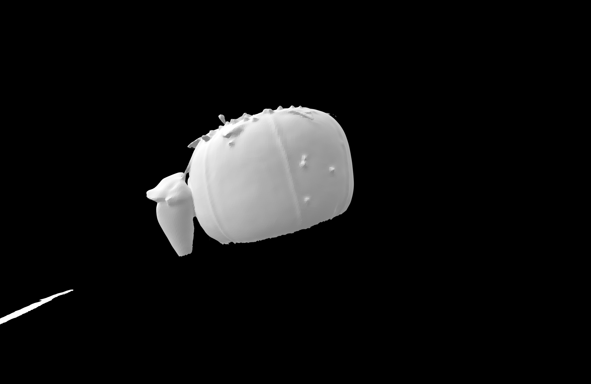
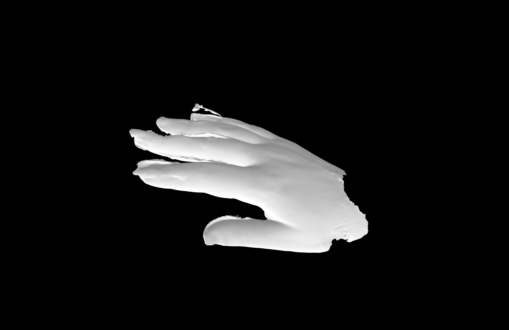
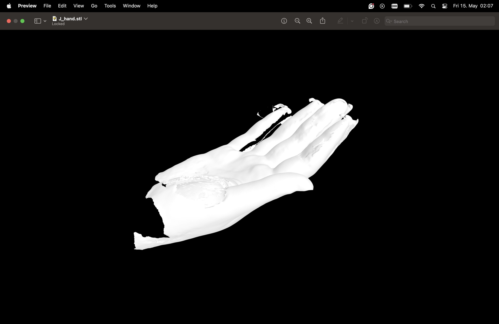
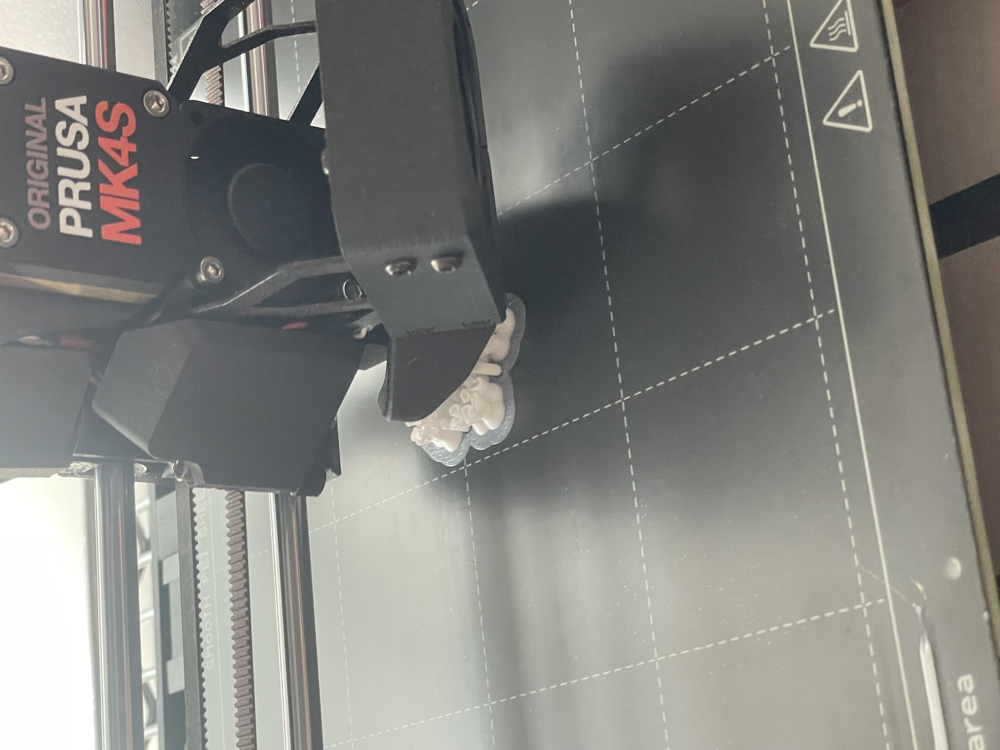

<div class="textcontainer">
<p class="margin"> </p>
<h3>Week 5: 3D Design & Printing</h3>
<h4>Assignment: Model and 3D print something</h4>
<p>For this week I used the scanner we had in lab to scan an object and my hand. <p>
For the 3D scanning process, I positioned the tripod so that the object was placed in the middle of the cross. As my first object, I decided to use a tomato-shaped needle holder that is used for sewing. It also had a small paprika-looking attachment, and there were several needles inside the tomato needle holder. I was curious to see how the 3D scanner would pick up the different textures and shapes included in this object. I placed it on a rotating surface and generated an STL file from the scan.
</p>
<div style="text-align: left;">
<p></p>
</div>
<p>
Beyond that, I was also curious about scanning body parts, so I decided to scan my hand. I realized very quickly that it was difficult not to move my hand too much, because I kept accidentally moving it out of the cross. I ended up doing at least five iterations, and the first few scans had many more fingers than a normal human hand would have. I tried it multiple times until I got the image below. Even though it was not perfect, it still turned out surprisingly well, considering that my hand probably moved during the scan.
I also noticed that if I moved an object or my hand too quickly, or rotated it too fast in the scanner, the result could become distorted. In addition, I tried to scan multiple figures that had reflective colors or shiny parts, such as a little angel figure with a silver heart. However, the shiny material was not captured well by the scanner. It was interesting to see how different colors, textures, and objects were picked up differently, or sometimes not picked up at all. I was not able to upload the STL files directly, so instead I included screenshots of the previews of my STL files below.
</p>
<div style="text-align: left;">
<p></p>
</div>
<div style="text-align: left;">
<p></p>
</div>
<div style="text-align: center;">
<a href="https://a360.co/3PQGTuO" target="_blank"
style="background-color: pink; color: black; padding: 10px 20px; text-decoration: none; border-radius: 5px; font-weight: bold;">
Click here for the CAD gear model
</a>
</div>
<br><br>
<div style="text-align: left;">
<img src="CAD_flowergears_copy.jpeg" style="width: 320px;">
</div>
<p> For the 3D printing week I decided to optimize my 3D print for the gears of my final project. I invested a lot of time to create the CAD model for the gear mechanism and went through multiple iterations before 3D printing the gears. Before modeling the gears, I thought a lot about what mechanisms I could employ to create a light and small design for the petal movement mechanism. Through rough measurements on paper, I determined the size I wanted the gears to be and went into exploring potential mechanisms. I was inspired by the rack and pinion mechanism. However, since I wanted to make all five petals move at the same time, I made the shaft in the middle a cylinder with rings, which I adjusted to the size of the gear teeth. In Fusion, I created joint movement for the shaft and the gears around it. I also attached simple petal structures to determine how many gears and rings I would need for the required angle of movement and later removed the petal structures, since I did not want to 3D print the petals to minimize the weight of the design and make the petals look more realistic. After having the shaft and the gears, I realized that the design was floating and needed holes in the gears to place a ring around the shaft that holds the gears in place. Here, I made sure to make the holes in the gears slightly bigger than the ring so that it moves around the ring, while ensuring that it is not too big to slip around the ring. For higher stability and assurance that each gear stays in place, and to allow the rings to move around the ring, the ring is made out of multiple straight parts rather than including curvature. In addition, I added stands to the ring for more support. Primarily, I added these thin and long stands to enable the incorporation of the flower structure into the fabric later. Lastly, I added a hole into the shaft to attach a wire to the shaft. When this wire is pushed up, the shaft moves up and the gears move along the shaft in the middle. That way, the petals are intended to move down and open. Whereas when the wire is pulled down, the gears close along the shaft again so that the petals come back up again. I also added small holes in each gear that are based on the diameter of the wire I wanted to use for the petals.</p>
<div style="text-align: left;">
<p></p>
</div>
<div style="text-align: left;">
<img src="gears_copy.jpeg" style="width: 320px;">
</div>
<p>The picture above shows the second attempt at 3D printing the flower. In the first iteration, the gears were not moving at all because I had not made the holes for the ring structure large enough, so the gears were fully attached to the ring with no spacing for movement. This prevented any movement. I adjusted the measurements in the design and 3D printed it again, which provided the base of the movement through the shaft that can be taken out and the gears that move freely around the ring that stands on the longer structures.</p>
</div>